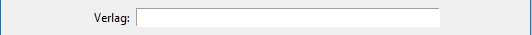
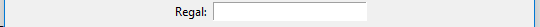
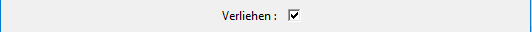
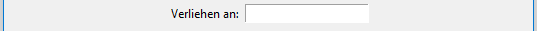
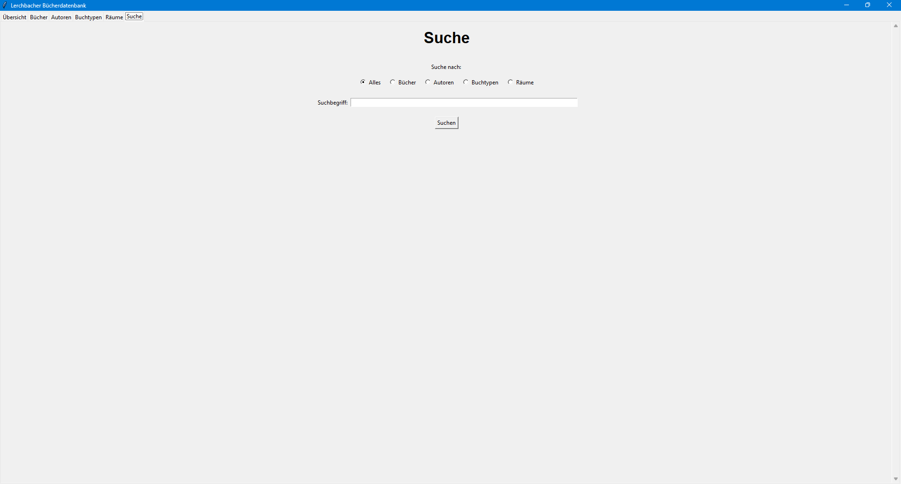
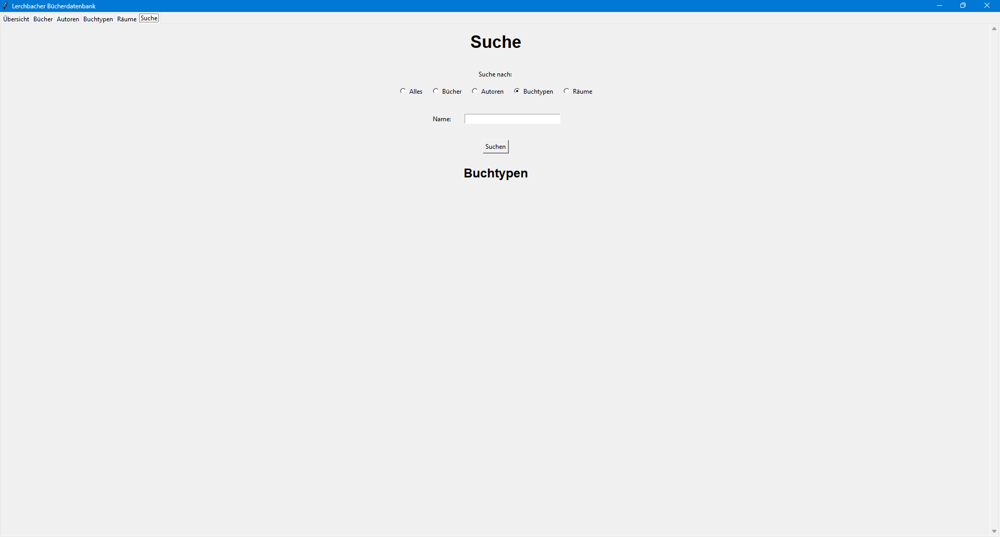
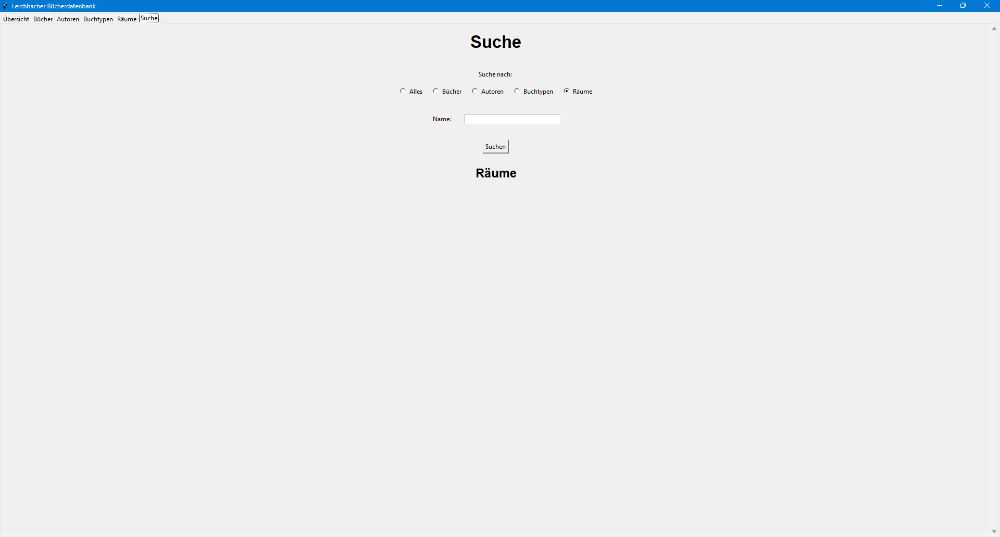

Dieses Handbuch bezieht sich momentan nur auf die Desktop Version. Die Webseite wird hinzugefügt werden, wenn ich sie entwickelt habe.
Die Desktop Version (auch Applikation genannt) ist in fünf Tabs gegliedert, die in der Leiste oben links ersichtlich sind. Das wechseln zwischen Tabs funktioniert einfach durch anklicken des gewünschten Ziel-Tabs.
Die Eingaben werden zwar im UTF-8 Format gespeichert, es sollten dennoch keine Unicode Zeichen, wie Emojis, eingefuegt werden, da dies die Applikation zum Absturz bringt (Python kann Unicode Zeichen nicht richtig darstellen). Sonderzeichen ihrer Anzeigesprache (wie die deutschen Umlaute) scheinen dennoch zu funktionieren.
Sollten Fehler auftreten, befinden sich weiter Informationen dazu in der log.txt Datei, die von der Applikation automatisch angelegt wird. Diese ist vor allem fuer den Entwickler zur Fehlerbehebung sehr hilfreich. Bitte beachten Sie, das die Datei beim erneuten Start der Applikation ueberschrieben wird. Sollten Sie also einem Fehler begegnen, kopieren Sie sich bitte die log.txt Datei, wenn Sie den Fehler auch auf Github melden wollen. Ich wuerde mich sehr darueber freuen und natuerlich versuchen ihn zu beheben.
Die folgenden Tabs sind momentan enthalten:
Laden Sie Python herunter, wenn Sie es nicht bereits installiert haben. Getestet wurde das Programm mit Version 3.13.1.
Linux Benutzer sollten Python uber den Packetmanager iher Distribution installieren.
Fuer Windows Benutzer befindet sich der Download auf der offiziellen Seite der Python Software Foundation.
WICHTIG für Windows Benutzer: aktivieren Sie bei der Installation die Option Python zum PATH hinzufügen (add python to PATH)!
Entscheiden Sie sich fuer einen Installationsordner fuer die Applikation. Soll die Datenbank von mehrern Benutzer verwendet werden, empfiehlt es sich, als Installationsordner einen geteilten Netzwerk- oder Cloudordner zu verweden. Beispielsweise ein Netzlaufwerk oder ein Gruppenordner in Nextcloud (meine Wahl).
Dann sollten Sie eine Ordner namens src im Installationsordner erstellen. Dieser wird als Speicherort fuer den Quellcode dienen.
Laden Sie nun den Quellcode herunter. Dafuer haben Sie folgenden Moeglichkeiten:
src Ordner entzippen. ODERsrc Ordner klonen und den Commit des zu installierenden Releases auschecken.Als naechstes oeffnen Sie den src Ordner im Terminal (Windows: CMD oder Terminal auf Windows 11) und erstellen eine virtuelle Umgebung fuer Python:
Das funktioniert folgendermassen: python -m venv NAME, wobei Sie NAME mit dem gewuenschten Namen der virtuellen Umgebung ersetzen. Standard ist (zumindest fuer mich venv oder env.
Nun muessen Sie die Packete aus der requirements-Desktop.txt Datei installiert werden. Am einfachsten geht das mit dem Befehl NAME\Scripts\pip.exe install -r requirements-Desktop.txt auf Windows und NAME/bin/pip install -r requirements-Desktop.txt auf Linux. Achten Sie wieder darauf, NAME mit dem von Ihnen gewaehlten Namen zu ersetzen
Windows benutzer koennen ihr Terminal/ ihre CMD jetzt schliessen.
Als naechstes sollten wir Ihnen eine Moeglichkeit geben, die Applikation einfacher zu starten. Auf Windows waere das etwas eine Verknuepfung, auf Linux ein Script fuer ihre Shell.
Oeffnen Sie zunaechst den Installationsordner im Explorer und machen einen Rechtsklick auf eine leere Flaeche. Waehlen Sie nun Neu -> Verknuepfung aus. Geben Sie nun den Pfad des Installationsordners ein (Sie koennen ihn aus der Addressleiste oben im Explorer kopieren) ein und fuegen Sie folgendes hinzu: src\NAME\Scripts\pythonw.exe. Klicken Sie auf weiter und wahelen Sie einen Namen wie Lerchbacher Buecherdatenbank.
Machen Sie nun einen Rechtsklick auf die neue Verknuepfung und waehlen Sie "Eigenschaften". Nun muessen wir zwei Kleinigkeiten Aendern:
Als erstes wenden wir uns dem Ziel zu: fuegen Sie am Ende der Zeile, ausserhalb der Anfuehrungszeichen, folgendes hinzu: src\Desktop\main.py.
Danach aendern wir etwas in Ausfueheren in: ersetzen Sie src\NAME\Scripts\ durch src\Desktop.
Jetzt sollten Sie in der Lage sein, die Applikation ueber die Verknuepfung zu starten.
Unter Linux ist meine Empfehlung, ein einfaches Skript fuer Ihre Shell zu schreiben, dass die Applikation startet. Dieses sollte sich direkt im Installationsordner befinden. Ich kenne mich nicht gut mit den verschiedenen Shells aus, deshalb koennte es sein, dass mein Beispiel bei Ihnen nicht funktioniert. In dem Fall, fragen Sie bitte eine Person, die sich mit der Shell auskennt, ob sie ihnen helfen kann. Ersetzen Sie ausserdem SHELL durch ihre Shell und NAME durch den Namen der venv.
#!/bin/SHELL
src/NAME/bin/python src/Desktop/main.py
Zum Schluss muessen Sie das Skript noch ausfuerbar machen. Das funktioniert mit dem Befehl chmod +x SKRIPT, wobei SKRIPT der Name des Skripts ist.
Der Uebersicht Tab zeigt die 12 zuletzt hinzugefuegten Buecher und Autoren an.

Buecher und Autoren lassen sich ueber den "Mehr anzeigen" Knopf ausklappen. Dadurch werden mehr Informationen und Optionen angezeigt, wie etwas "Bearbeiten" und "Loeschen".

Der Buecher Tab enthaelt eine Liste alle Buecher, die in der Datenbank gespeichert sind. Ebenfalls findet sich dort die Moeglichkeit, neue Buecher hinzuzufuegen. Auch hier lassen sich Buecher ueber den "Mehr anzeigen" Knopf ausklappen. Dadurch werden mehr Informationen und Optionen angezeigt, wie etwas "Bearbeiten" und "Loeschen".

Ein Klick auf den Knopf "Neues Buch hinzufuegen" oeffnent einen leeren Buch-Bearbeitungs Dialog.
Der selbige wird auch geoeffnet, sollten Sie bei einem Buch "Bearbeiten" waehlen.
In diesem finden sich eine Vielzahl an Eingabefeldern. Alle sind beschriftet, aber wir gehen Sie hier trotzdem einmal durch.
Dieses Feld speichert den Titel eines Buches.

Dieses Feld erlaub ihnen, eine beliebige Anzahl an Autoren zum Buch hinzuzufuegen. Bitte beachten Sie, dass mindestens 1 Autor angegeben werden muss! Sollten Sie also ein Buch von einem unbekannten Autor eintragen wollen, empfiehlt es sich, einen "Unbekannt" Autor hinzuzufuegen. (Siehe 5. Autoren)
Beachten Sie ausserdem, dass dieses Feld keine Moeglichkeit zum Erstellen von Autoren enthaelt. Daher sollten Sie die Autoren eines Buches vor dem Erstellen des Letzteren suchen und, wenn noetig, erstellen.

Sehen wir es uns nun etwas genauer an:
> Knopf verschiebt alle markierten Autoren von der linken auf die rechte Seite.< Knopf verschiebt alle markierten Autoren von der rechten auf die linke Seite.>> Knopf verschiebt alle Autoren von der linken auf die rechte Seite, egal ob gewaehlt oder nicht.<< Knopf verschiebt alle Autoren von der rechten auf die linke Seite, egal ob gewaehlt oder nicht.Hier koenne Sie den Verlag / Herausgeber des Buches eintragen
Dieses Feld bietet die Moeglichkeit, die ISBN-13 des Buches einzugeben. Die Beistriche zwischen den verschiedenen Segmenten werden automatisch gesetzt. Die Laenge dieses Feldes wurde, Aufgrund des einzugebenden Wertes, auf 13 Zeichen, ausgenommen der Beistriche, begrenzt. Schreiben Sie bitte nicht zu schnell, da die Formatierung etwas langsam ist. Zur Referenz, die ISBN-13 hat die Form xxx-x-xxx-xxxxx-x.

Hier koenne Sie die Auflage des Buches eintragen. Der akzeptierte Wertebereich liegt zwischen 1 und 20.

Dieses Feld speichert den Buchtypen des Buches. Dieser kann aus der Liste gewaehlt werden, die beim Klicken auf den kleinen Pfeil rechts angezeigt wird. Bitte pruefen Sie vor Erstellen des Buches, ob der gewuenschte Buchtyp bereits existiert (6. Buchtypen) Das Feld verfuegt ausserdem ueber eine Autovervollstaendigung fuer die moeglichen Buchtypen. Sie koennen also den Anfang eines Typen eingeben und bekommen einen Vorschlag zur Vervollstaendigung.

Hier koenne Sie Kategorien oder Stichwoerter zum Buch eintragen. Die einzelnen Eintraege koennen Leerzeichen enthalten und werden durch Semikolone(';') getrennt.

Dieses Feld speichert den Raum des Buches. Dieser kann aus der Liste gewaehlt werden, die beim Klicken auf den kleinen Pfeil rechts angezeigt wird. Bitte pruefen Sie vor Erstellen des Buches, ob der gewuenschte Raum bereits existiert (7. Raeume) Das Feld verfuegt ausserdem ueber eine Autovervollstaendigung fuer die moeglichen Raeume. Sie koennen also den Anfang eines Raumes eingeben und bekommen einen Vorschlag zur Vervollstaendigung.

Hier koennen Sie das Regal eintragen, in dem das Buch normalerweise steht.
Speichert, ob das Buch im Moment verliehen ist oder nicht. Den Zustand des Felder aendern Sie durch anklicken.
Dieses Feld wird nur angezeigt, wenn im vorherigen Feld angegeben wurde, dass das Buch momentan verliehen ist. Hier kann eingetragen werden, an welche Person das Buch vergeben wurde.
Am unteren Ende der Bearbeitungs- und Erstellungsdialoge befinden sich der "Speichern" und der "Abbrechen" Knopf.
Der Speichern Knopf speichert die Daten der Felder in der Datenbank ab und schliesst den Dialog. Wurde der Dialog ueber den "Neues Buch hinzufuegen" Knopf geoeffnet, wird ein neues Buch erstellt.
Der Abbrechen Knopf schliesst den Dialog, ohne die gemachten Aenderungen/Eintragungen in der Datenbank zu speichern.
Diese beiden Knoepfe werden in der ganzen Applikation mehrmals verwendet.
Der Autoren Tab enthaelt eine Liste alle Autoren, die in der Datenbank gespeichert sind. Ebenfalls findet sich dort die Moeglichkeit, neue Autoren hinzuzufuegen. Auch hier lassen sich Autoren ueber den "Mehr anzeigen" Knopf ausklappen. Dadurch werden mehr Informationen und Optionen angezeigt, wie etwas "Bearbeiten" und "Loeschen".

Ein Klick auf den Knopf "Neuen Autor hinzufuegen" oeffnet einen leeren Autoren-Bearbeitungs-Dialog.
Der selbige wird auch geoeffnet, sollten Sie bei einem Autor "Bearbeiten" waehlen.
In diesem finden sich einige Eingabefelder. Alle sind beschriftet, aber wir gehen Sie hier trotzdem einmal durch.
Dieses Feld ist fuer den Namen des Autors.
Hier koennen Sie die Nationalitaet des Autors eintragen.
In diesem Feld koennen Sie das Geburtsdatum des Autors angeben.
Es gibt hier 1 Sonderdatum: wird der 12.12.2200 eingetragen, erkennt die Applikation dies als "Unbekanntes Geburtsdatum"
In diesem Feld koennen Sie das Sterbedatum des Autors angeben.
Es gibt hier 2 Sonderdaten:
- wird der 12.12.2200 eingetragen, erkennt die Applikation dies als "Unbekanntes Sterbedatum"
- wird der 5.5.2200 eingetragen, erkennt die Applikation dies als "Ist noch am Leben"
Hier koennen Sie auswaehlen, ob der Autor ein Nobelpreistraeger ist. Aendern des Zustands des Feldes funktioniert durch anklicken.
Am unteren Ende der Bearbeitungs- und Erstellungsdialoge befinden sich der "Speichern" und der "Abbrechen" Knopf.
Der Speichern Knopf speichert die Daten der Felder in der Datenbank ab und schliesst den Dialog. Wurde der Dialog ueber den "Neuen Autor hinzufuegen" Knopf geoeffnet, wird ein neuer Autor erstellt.
Der Abbrechen Knopf schliesst den Dialog, ohne die gemachten Aenderungen/Eintragungen in der Datenbank zu speichern.
Diese beiden Knoepfe werden in der ganzen Applikation mehrmals verwendet.
In diesem Tab finden Sie eine Auflistung aller in der Datenbank gespeicherten Buchtypen. Ueber den "Neuen Buchtypen hinzufuegen" Knopf koenne Sie einen neuen Buchtypen anlegen. Ueber den "Bearbeiten" Knopf neben jedem Buchtypen laesst sich der Name des Typen aendern und ueber den "Loeschen" Knopf aus der Datenbank entfernen.

Hier koennen Sie den Namen des Buchtypen aendern, bzw. einen neuen mit dem angegebenen Namen erstellen.

In diesem Tab finden Sie eine Auflistung aller in der Datenbank gespeicherten Raeume. Ueber den "Neuen Raum hinzufuegen" Knopf koenne Sie einen neuen Raum anlegen. Ueber den "Bearbeiten" Knopf neben jedem Raum laesst sich der Name des Raumes aendern und ueber den "Loeschen" Knopf aus der Datenbank entfernen.

Hier koennen Sie den Namen des Raumes aendern, bzw. einen neuen mit dem angegebenen Namen erstellen.

Der Suchen Tab stellt ihnen die Moeglichkeit, die Datenbank zu dursuchen, zur verfuegung.
Sie koennen waehlen, ob sie eine generelle Suche nach einem Stichwort, oder eine Suche nach einem bestimmten Art von Eintrag in der Datenbank (Buch, Autor, Buchtyp oder Raum) durchfuehren moechten.
Wenn Sie ihre Auswahl aendern, wird Ihnen eine andere Sammlung an Suchfeldern angezeigt. Diese Unterscheiden sich nur minimal von den Bearbeitungs-Dialogen der einzelnen Eintragstypen.
Leergelassene Suchfelder werden meist ignoriert (Aussnahmen siehe unten).
Die Unterschiede werden im Folgenden erlaeutert:
Mit dieser Option koenne Sie eine Suche nach einem bestimmten Stichwort in den Titeln/Namen aller Eintraege in der Datenbank durchfuehren. Die Ergebnisse werden nach Eintragstyp gegliedert angezeigt.
Diese Option laesst Sie nach Buechern suchen. Die Suchfelder, die hier angezeigt werden, sind eine Kopie des Bearbeitungs-Dialoges fuer Buecher, abgesehen vom "Verliehen" Feld.
Dieses wurde durch ein Textfeld mit Autovervollstaendigung ersetzt (Ja, Nein).

Diese Option laesst Sie nach Autoren suchen. Die Suchfelder, die hier angezeigt werden, sind eine Kopie des Bearbeitungs-Dialoges fuer Autoren.
Die Aenderungen an diesen Suchfeldern betreffen:
1. die Sonderdaten der Datumsfelder:
bei beiden Feldern wurde das Datum 1.1.2200 als Equivalenz zum Leerlassen des Feldes hinzugefuegt. Bitte lassen Sie die Datumsfelder nicht frei! Dies fuehrt zu einem Fehler in der Applikation.
2. Das "Ist ein Nobelpreistraeger?" Feld: Dieses wurde durch ein Textfeld mit Autovervollstaendigung ersetzt (Ja, Nein).
Hier koennen Sie nach Buchtypen suchen, die den Inhalt des Eingabefelds in ihrem Titel haben.
Hier koennen Sie nach Raeumen suchen, die den Inhalt des Eingabefelds in ihrem Titel haben.
 ^